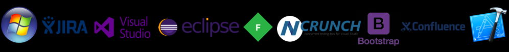

Skills I have developed and been working on:

Jim Rohn:
"You must either modify your dreams or magnify your skills"
Skills I have developed and been working on:
Able to work Independently and within groups ⚬ Analyze data efficiently ⚬ Android programming experience
Agile ⚬ Alert ⚬ Adaptable ⚬ Attentive
Background in Software Programming ⚬ Backend Development : SQL, Python ⚬ Building/Developing API
C# and .NET programming experience ⚬ C,C++ languages known ⚬ Comfortable Writing and Analyzing SQL Queries
Dedicated , Disciplined , Determined and Diligent towards my work
Experience with Microsoft Visual Studio ⚬ Experience with Cadence Software ⚬ Experience with SQL queries
Familiarity with Fiddler and Postman tools ⚬ Familiarity with HTTP ⚬ Familiarity with Algorithms & Data Structures
Github and Git working experience ⚬ Goal-Oriented
Hands on experience with Confluence ⚬ Hands-On Software Troubleshooting Experience ⚬ HTML and CSS3 experience
IOS application development familiarity
Java programming experience ⚬ JavaScript experience ⚬ JQuery familiarity
Keen attention to detail ⚬ Knowledge of Full-Stack development ⚬ Knowledge of best programming practices
Learning more about how to generate/write highly readable, maintainable and efficient code
Mac Operating System experience ⚬ Microsoft .NET experience ⚬ MATLAB familiarity ⚬ Microsoft SQL Server experience
NCrunch: Experience with performing Test-Driven-Development with it
Object-Oriented Programming experience
Perforce version control experience ⚬ Pycharm working experience ⚬ Positive attitude
Revise Programs for Corrections and Enhancements ⚬ Ready to learn attitude ⚬ Recommended changes in UI/UX of applications
SQL experience ⚬ Strong computer science fundamentals ⚬ Self-driven and Self-motivated ⚬ Solution finder
Thorough understanding of OOPs principles ⚬ Thorough understanding of Cloud-Computing ⚬ Team-work
Unix and Linux Operating System familiarity
Verilog : Hardware Development Language known
Xcode working experience with Swift Programming Language
